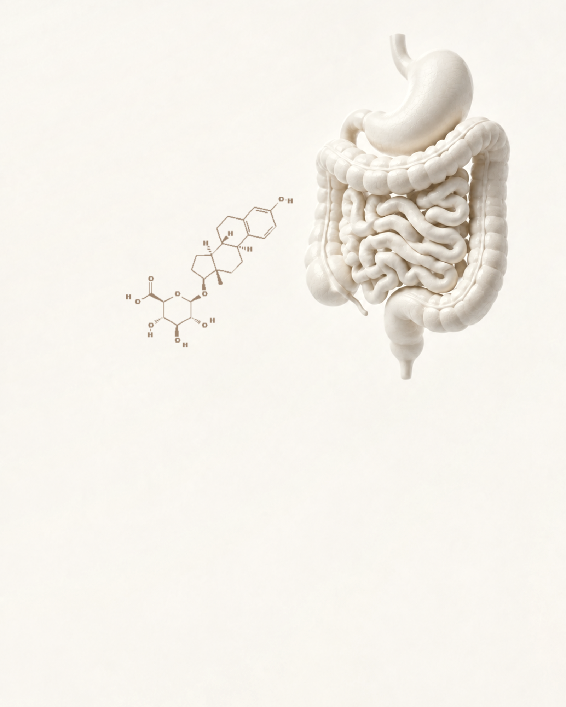
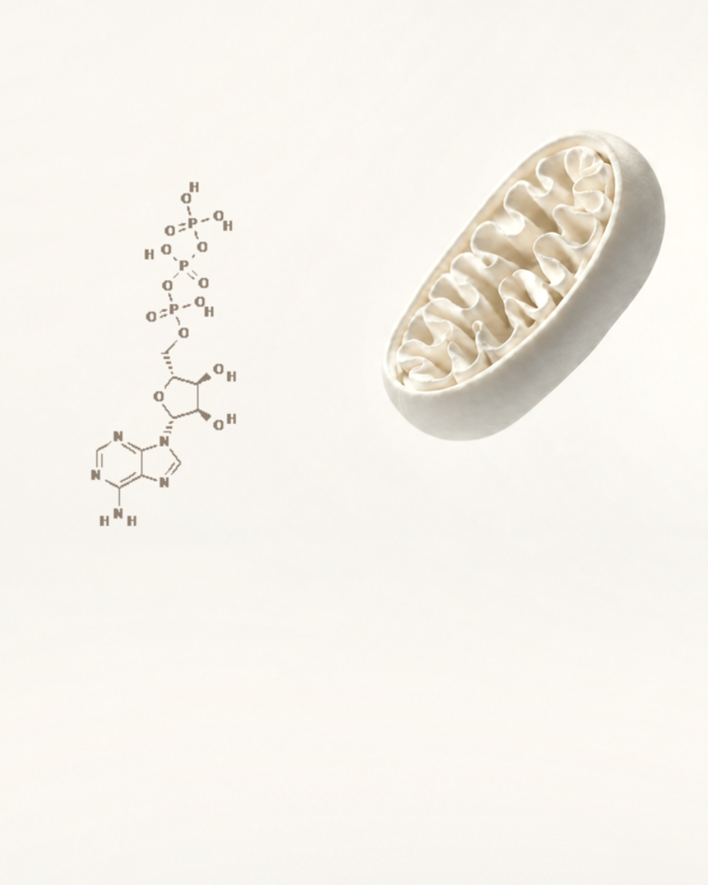

Hormone Therapy+ Gut Health
Balance begins in the gut — so what we rebalance actually lands, and stays landed.
Explore05 · Booster programs
Pair your hormone care with the systems that amplify it.

Balance begins in the gut — so what we rebalance actually lands, and stays landed.
Explore
Mitochondrial support layered over your protocol — energy built at the cellular level.
ExploreNot sure which fits? Start with a free 10-minute discovery call — Irina will listen, and point you to the right one.